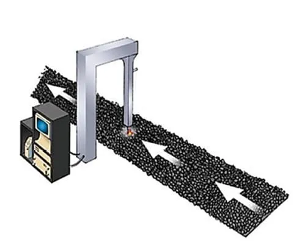
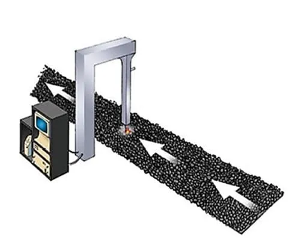

Coal
Coal has been a ‘‘hot topic’’ in LIBS research regarding the technique stand-off capabilities and broad elemental coverage. It is noteworthy that Coal is still one of the major resources for the global production of electricity. Elemental composition of coal (major elements C, H, O, N, and S) could affect its combustion efficiency to the high extent. Spectoshimatsu LIBS analyzers could be employed in different phases of coal processing such as coal quality control, combustion optimization, fly and bottom ashes analyses.
Rapid in-line or at-line analysis of coal is essential to avoid the environmental issues and optimized power generation. Spectoshimatsu systems provide the best solution comparing with other analyzers which suffer from safety issues of radiation leakage. LIBS measurements are completed in a coal-fired power plant to in-line detection of coal ash, sulfur content (for optimal SO2 reduction) and other substantial elements. Monitoring of unburned carbon in coal fly ash, heating value and humidity are also important to improve the combustion efficiency of the coal which accessible by Spectoshimatsu analyzers.
 

Coal combustion is one of the main sources of carbon emission. Besides, the industrial index of coal is dependent on its elemental and chemical composition such as volatile matter, fixed carbon content, calorific value and other main indicators. As a result, discrimination and classification of different types of coals are very important to save the environment and optimized energy harvesting. Spectoshimatsu LIBS scanners have substantial advantageous over periodic grab sampling and lengthy lab testing over the QA processes of coal considering the user-friendly system, low or lack of sample preparation, multi- element and wide range of element detection. Spectoshimasu scanners can detect main elements in coal and coal ash such as C, Mg, Al, Si, Ca, Fe, and Ti with acceptable accuracy and measurement error. These measurements are completed in-line at boiler control system coal of combustion power plant.